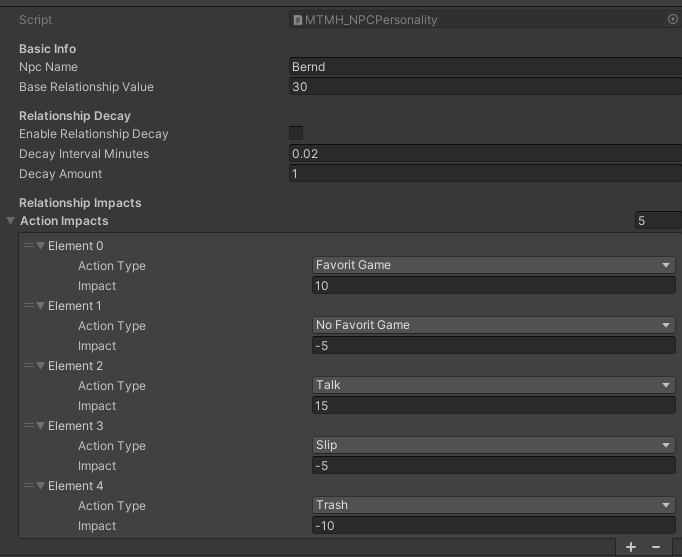
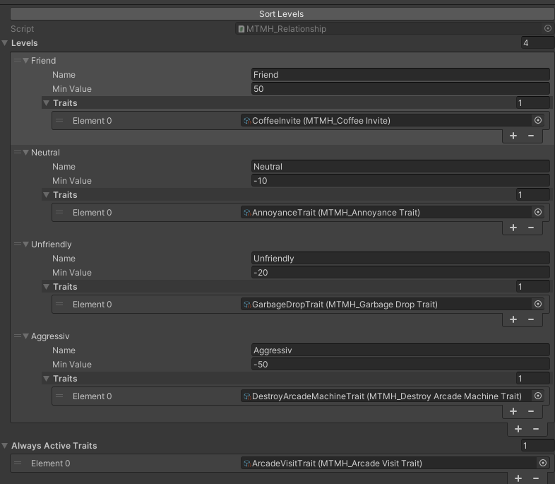
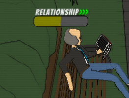
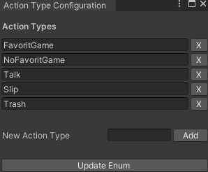

Project Description
In my master´s thesis titled "Enhancing Player Experience Through Dynamic NPC Attributes", I created an innovative system in Unity that dynamically adjusts NPC attributes based on their relationship with the player, enabling contextual behavior adaptations driven by numerical relationship values and definable relationship stages.
System Overview
Player-NPC Relationships
Each NPC maintains a unique relationship with the player that can change based on interactions throughout the game. The relationship values influence how NPCs behave and respond to the player's actions.
Dynamic Behavior Adaptation
NPC behaviors and characteristics adapt dynamically based on relationship levels, creating more realistic and personalized interactions that affect gameplay experience.
Motivation & Development
The inspiration for this system came during my work on the Arcady Village project, where we wanted to create more individualized and dynamic NPCs with unique personalities that could influence the gameplay. This system enables gameplay to become more challenging if the player treats NPCs poorly or fails to maintain good relationships with them.
While initially conceived for Arcady Village, the system was designed to be universally applicable. Custom editor windows were developed to simplify the configuration process, making it accessible for different game projects.
Technical Implementation
The system is implemented through two ScriptableObjects assigned to each NPC:
- Personality ScriptableObject: Configures which in-game actions can positively or negatively affect the relationship with the player. Actions can be easily configured through a custom editor window and are stored in an enum for selection via dropdown menu. Each action is assigned a value that is added to or subtracted from the relationship score.
- Relationship ScriptableObject: Defines character traits for each NPC by adding multiple relationship stages that activate at specific relationship values. All behaviors added to active relationship stages become active. Additionally, there's an option to add traits that are always active, enabling the development of characteristics purely based on relationship values, such as probabilities.
Key Features
- Customizable Relationship Metrics: Define specific actions that affect NPC relationships differently based on the NPC's personality
- Tiered Relationship System: Create different relationship stages with unique behaviors that activate at defined thresholds
- Easy Configuration: Custom editor windows simplify the process of setting up and adjusting NPC behaviors
- Universal Application: System designed to work across various game types and contexts
System Screenshots



